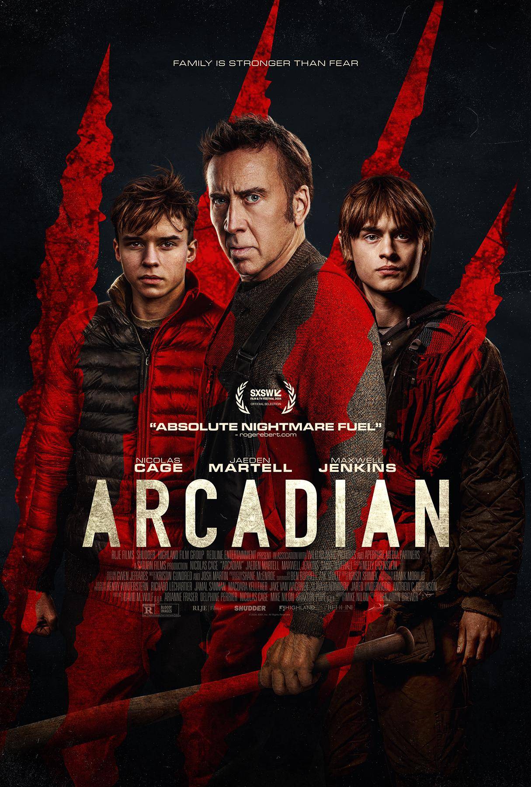

Arcadian |
|
|  |
Phil Comeau and Rodrigue Jean |
|
Arcadian (2024) is a post-apocalyptic horror thriller directed by Benjamin Brewer and starring Nicolas Cage as a father protecting his twin sons from terrifying creatures that emerge at night after civilization’s collapse. |
|